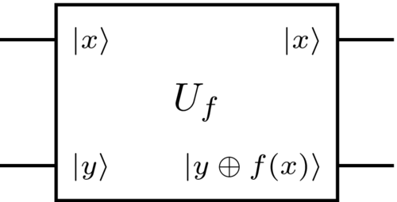
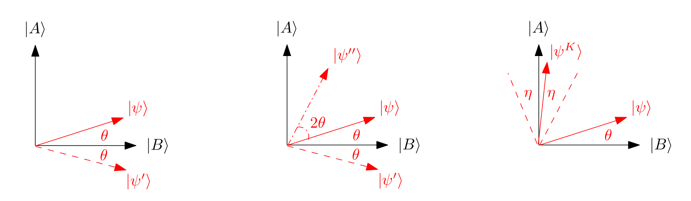

Ch3-Lecture 8¶
Functions as oracles¶
The first thing we’ll need to do is understand how to model functions in the quantum circuit model. What makes the task slightly non-trivial is that, recall by Postulate 2 of quantum mechanics, all quantum operations must be unitary and hence reversible. In general, however, given the output \(f(x)\) of a function, it is not always possible to invert \(f\) to obtain the input \(x\). In other words, we have to compute \(f(x)\) in such a way as to guarantee that the computation can be undone. In the case of binary functions, this is achieved via the following setup:

Here, \(U_f \in \mathcal{U} \left( \left( \mathbb{C}^2\right)^{ \otimes 2} \right)\) is a unitary operator mapping \( \left|x\right\rangle \left|y\right\rangle \mapsto \left|x\right\rangle \left|x \oplus y\right\rangle \) for any \(x, y \in \{0, 1\}\) (i.e. \( \left|x\right\rangle \), \( \left|y\right\rangle \) denote standard basis states), and where \( \oplus \) denotes XOR or addition modulo 2. Note that by linearity, once we define the action of \(U_f\) on standard basis states, we immediately know how it acts on any input state \( \left|\psi\right\rangle \in \left( \mathbb{C}^2 \right)^{ \otimes 2} \). Observe now that \(U_f\) is reversible — this is because running \(U_f\) again on its output, \(\left|x\right\rangle \left|y \oplus f(x)\right\rangle\), yields state \(\left|x\right\rangle \left|y \oplus f(x)\oplus f(x)\right\rangle= \left|x\right\rangle \left|y\right\rangle \), since \(f(x) \oplus f(x)=0\) (adding the same bit twice and dividing by 2 leaves remainder zero). Second, note that we have not specified the inner workings of \(U_f\) (i.e. we have not given a circuit implementing the functionality stated above); in this course, we shall treat \(U_f\) as a “black box” or “oracle” which we presume we can run, but cannot “look inside” to see its implementation details.
The phase kickback trick¶
To explain the trick, consider for any \(x \in \{0, 1\}\) what happens if we run \(U_f\) on input \( \left|x\right\rangle \left|-\right\rangle \):
Now, there are two possibilities: Either \(f(x) = 0\), or \(f(x) = 1\). If \(f (x) = 0\), the equation above simplifies to
i.e. the input state is unchanged by the action of \(U_f\) . If, on the other hand, \(f (x) = 1\), we instead have
i.e. a \(−1\) phase factor is produced. We can summarize both these cases in a single equation:
Grover search¶
Discovered by Lov Grover in 1996, Grover search is more specifically a quantum algorithm for solving the following general problem: Given query access to an oracle containing \(N\) items, one of which is “marked”, find the marked item. For example, the “oracle” could be implemented by a 3-SAT formula \(\phi\), indexed by \(n\)-bit assignments \(x\), and the aim is to find a satisfying assignment \(x\) (which would be considered “marked”). Grover’s algorithm solves this problem with high probability using \(O(\sqrt{N})\) queries to the database (which turns out to be optimal for a quantum algorithm), whereas a classical algorithm would require \(\Omega(N)\) queries in the worst case. Thus, Grover search solves 3-SAT in \(O \left(\sqrt{2^n}\right) \) time.
The unstructured search problem¶
We begin by formalizing the unstructured search problem.
Unstructured search (SEARCH)
Input: Query access to an oracle \(U_f\) for \(f : \{0, 1\}^n \mapsto \{0, 1\}\) an unknown Boolean function, meaning the ability to compute (at unit cost) map \( \left|x\right\rangle \left|y\right\rangle \mapsto\left|x\right\rangle \left|y \oplus f(x)\right\rangle \) for any \(x, y \in \{0, 1\}^n\) , and \( \oplus \) the bit-wise XOR operation.
Output: An index \(x \in \{0, 1\}^n\) such that \(f (x) = 1\), if one exists.
Note that no assumptions about \(U_f\) are made, other than the requirement that we have superposition query access to the input/output behavior of \(f\).
Grover’s algorithm¶
Define \(N := 2^n\) . We now show how to solve SEARCH in \(O( \sqrt{N})\) time on a quantum computer. For clarity, recall that typically when one discusses problems with black-box access to an oracle (as in SEARCH), the relevant cost model is query complexity (i.e. each query has unit cost, and this is the only cost we care about). This is also the cost model we adopt here. We begin by revisiting our old friend, the phase kickback trick. Viewing this trick geometrically, in particular, will kickstart the development of the remainder of Grover’s algorithm. For brevity, we shall use the following notation for the phase kickback $\( \left|x\right\rangle \mapsto (-1)^{f(x)} \left|x\right\rangle \)$

- Graphic interpretation of Grover
(Left) A reflection of \( \left|\psi\right\rangle \) about \( \left|B\right\rangle \) to \( \left|\psi^\prime \right\rangle \). (Middle) A reflection of \( \left|\psi^\prime \right\rangle \) about \( \left|\psi\right\rangle \). For clarity, the angle \(2\theta\) is between \( \left|\psi^{ \prime\prime} \right\rangle \) and \( \left|\psi^\prime \right\rangle \). (Right) The final state \( \left|\psi^K\right\rangle= \left(R_\psi R_B \left|\psi\right\rangle \right) \) after running the Grover iterate \(K\)times.
It will be remarkably helpful to visualize phase kickback geometrically in the case of SEARCH. This is done, roughly, by considering superpositions over marked and unmarked items (for clarity, a “marked” (“unmarked”) item \(x\) satisfies \(f (x) = 1\) (\(f (x) = 0\))). For this, let \(A, B \subseteq \{0, 1\}^n\) be the sets of marked and unmarked items, respectively, and define
and
Thus, \( \left|A\right\rangle \), (\( \left|B\right\rangle \)) is an equal superposition over all marked (unmarked) items.
Send it after class 1¶
Show that \(U_f \left|A\right\rangle = - \left|A\right\rangle \) and \(U_f \left|B\right\rangle = \left|B\right\rangle \)
In words, restricted to the 2D space defined by \(\text{Span}\left( \left|A\right\rangle,\left|B\right\rangle \right)\), \(U_f\) acts as a reflection about \(\left|B\right\rangle\), as depicted in the figure above. And this is no coincidence — digging more deeply into this view will lead us directly to Grover’s algorithm (though, for clarity, this geometric view was only discovered after Grover’s original work). To see this, let us remind ourselves of the second tool we have at our disposal — preparing some initial start state \( \left|\psi\right\rangle \). Ideally, this state \( \left|\psi\right\rangle \) should also lie in the span of \(\left|A\right\rangle\) and \(\left|B\right\rangle\), so that it “fits” into the 2D picture.
Send it after class 2¶
Take a moment to guess what might be a “reasonable” choice of \( \left|\psi\right\rangle \), given our current state of knowledge. What do we know about the location of the marked items? What choice of \( \left|\psi\right\rangle \) might lie in the span of \( \left|A\right\rangle \) and \( \left|B\right\rangle \)?
The start state \( \left|\psi\right\rangle \)¶
Since a priori we have no reason to believe any particular item \(x\) is marked, a naive choice of start state is
In other words, \( \left|\psi\right\rangle \in \text{Span}\left( \left|A\right\rangle,\left|B\right\rangle \right)\), as desired, and we may depict it as in the middle situation in the above Figure.
Send it after class 3¶
Prove the second equality above.
Show that \(\cos\theta=\sqrt{1-\frac{\left|A\right|}{N} }\)
The goal.¶
To guide the rest of the algorithm, we now pause and step back to restate our goal in the 2D picture given in the figure. Given the ability to prepare \( \left|\psi\right\rangle \), we wish to rotate \( \left|\psi\right\rangle \) counter-clockwise up to to \( \left|A\right\rangle \), and subsequently measure in the standard basis, thus obtaining some marked item \(x \in A\). Since this is just a rotation map, it is certainly possible, in that there exists a \(2^n\times2^n\) unitary matrix performing this rotation. The question is: Can this mapping be computed using \(\text{poly}(n)\) queries to \(U_f\) (and ideally, \(\text{poly}(n)\) auxiliary gates)?
Two reflections make a rotation.¶
As the saying goes, beggars can’t be choosers, and indeed to attain our goal, we must make do with what few tools the generality of SEARCH affords us: We can reflect about \( \left|B\right\rangle \), and we can prepare \( \left|\psi\right\rangle \). The key observation is that since we can efficiently prepare \( \left|\psi\right\rangle \), i.e. \( \left|\psi\right\rangle = H^{ \otimes n} \left|0^n\right\rangle \), we can also reflect about \( \left|\psi\right\rangle \).
Send it after class 4¶
A reflection about \( \left|\psi\right\rangle \) is achieved by unitary \(U_\psi = 2 \left| \psi \right\rangle\!\left\langle \psi \right| −I\). Show how to implement \(U_\psi \) for our choice of \( \left|\psi\right\rangle \). (Hint: Begin by showing how to reflect about \( \left|0^n\right\rangle \), i.e. by implementing \(U_{0^n} = 2 \left| 0^n \right\rangle\!\left\langle 0^n \right| −I\))
Geometrically, this means we can map \( \left|\psi^\prime \right\rangle \) to \( \left|\psi^{\prime\prime} \right\rangle \) as shown in the figure. In other words, by first reflecting about \( \left|B\right\rangle \), and then about \( \left|\psi\right\rangle \), we can effect a counter-clockwise rotation of \(2\theta\). Magic! Formally, we shall repeatedly apply the pair of reflections (often dubbed the “Grover iterate”)
where \(R_B\) is effected by querying the oracle \(U_f\) , and \(R_\psi\) by undoing the preparation procedure for \( \left|\psi\right\rangle \), reflecting about \( \left|0^n\right\rangle \), and then re-doing the preparation for \( \left|\psi\right\rangle \).
The number of iterations required.¶
We can now state Grover’s algorithm as follows:
Prepare \( \left|\psi\right\rangle = H^{ \otimes n} \left|0^n\right\rangle \).
Apply the Grover iterate, \(R_\psi R_B\) , \(K\) times.
Measure in the standard basis to obtain string \(x \in \{0, 1\}^n\) .
If there are no solutions, i.e. \(M = 0\), this procedure always outputs \(x\) satisfying \(f (x) = 0\), as expected. If \(M > 0\), on the other hand, the question is what to set \(K\), the number of loop iterations, to? Note that it suffices for the algorithm to succeed with any fixed constant success probability \(p\), as then independently repeating the algorithm drives down the overall error probability exponentially. To simplify the analysis, set \(p = 1/2\). Without loss of generality, we may assume \(\left|A\right| /N \leq 1/2\) (as otherwise classically choosing uniformly random inputs to \(U_f\) yields success probability at least 1/2). We hence have \(\theta\leq\pi/4\). Thus, we start with \( \left|\psi\right\rangle \) at \(\theta = \arccos( \sqrt{1-\frac{\left|A\right|}{N} } ) \leq \pi/4 \), and we wish to end up at \( \left|\psi^k\right\rangle \) with \(\eta \in [−\pi/4, \pi/4].\)
Send it after class 5¶
Show that for Step 3 of Grover’s algorithm to output \(x \in \{0, 1\}^n\) satisfying \(f (x) = 1\) with probability at least \(1/2\), it suffices in the right of the figure that \( \left|\psi^K\right\rangle \) makes angle at most \(\eta \leq \pi/4\) with \( \left|A\right\rangle \).
Given that \( \left|\psi\right\rangle \) starts at angle \(\theta \leq \pi/4\), do we ever need to wrap around the circle (when applying the Grover iterate) in order to land in range \(\eta \in [−\pi/4, \pi/4]\)?
Using your answer from the previous exercise, show that setting \(K= \left( \frac{1}{2\theta} \left(\arccos \sqrt{ \frac{\left|A\right|}{N} } - \frac{\pi}{4} \right) \right)\) suffices to succeed with probability at least \(1/2\), assuming \(\left|A\right| > 0\).
show that \(\sin\theta=\sqrt{ \frac{\left|A\right|}{N} }\) and that \(\theta \geq \sin\theta\) for \(|\theta| \leq 1\). Using these facts, show that \(K\leq \left( \frac{\pi}{8} \sqrt{ \frac{N}{\left|A\right|} }\right)\in O \left(\sqrt{ \frac{N}{\left|A\right|} }\right) \) queries to \(U_f\) suffice to find a marked item with probability at least \(1/2\).
How many auxiliary gates (i.e. gates other than queries to \(U_f\)) does Grover’s algorithm use?
In closing, given query access to an oracle \(U_f\) for which \(|A|\) out of \(N = |A| + |B|\) items are marked, a marked item can be found quantumly using \(O\left(\sqrt{ \frac{N}{\left|A\right|} }\right)\) queries. There is a slight catch, however — the exact number of queries required requires knowledge of \(|A|\). Luckily, it turns out that not only do quantum algorithms allow us to check if \(|A| > 0\), but additionally to estimate \(|A|\) itself to within multiplicative error. This is known as quantum approximate counting, covered next.
Approximate counting¶
We defined the input to SEARCH as an oracle \(U_f\), and the output was to find a marked item \(x\), i.e. satisfying \(f (x) = 1\). This can be generalized to the much more difficult question: Can we count the number of marked items? Returning to the setting where \(U_f\) is a black-box about which we make no assumptions, there are nowadays multiple approaches for quantumly approximately counting \(M := |{x \in \{0, 1\} | f (x) = 1}|\) A classic approach is to run quantum phase estimation on the Grover iterate (a theme which reappears in more general quantum walk frameworks, which we will cover later), as it turns out the eigenvalues of the iterate encode \(M\) . However, here we shall review a conceptually simpler, more recent approach due to Aaronson and Rall, which does away with the QPE machinery and whittles the solution down to requiring just a single tool — Grover search itself.
Intuition¶
The basic idea. Let \(p = M/N\) , i.e. the fraction of satisfying assignments. Naively, there is a simple classical algorithm for estimating \(p\) — simply pick \(x\) uniformly at random, and evaluate \(f (x)\). By definition, this succeeds with probability \(p\), and so \(1/p\) trials are expected before a satisfying assignment is found. Of course, in the worst case, \(1/p \in O(N )\), and by now we are spoiled with getting faster \(O( \sqrt{N} )\) runtimes via Grover search. Thus, roughly, the quantum algorithm we discuss will carefully mimic (a refinement of) the idea above in conjunction with Grover search. In the remainder of this section, we state the algorithm, and sketch its proof of correctness.
Quantizing the basic idea.¶
Recall that in Grover search, the angle made by start state \( \left|\psi\right\rangle \) with \( \left|B\right\rangle \) is \(\theta = \arcsin \left( \sqrt{ \frac{|A|}{N}} \right) \), or in the terminology of this section, \(\theta = \arcsin( \sqrt{M/N } )\). One can generalize the previous analysis to show that by making \(O(r)\) queries to \(U_f\) , Grover search finds a marked item with probability \(p = \sin^2(r\theta)\). The smaller \(M\) is, the smaller \(\theta\) is, and hence the larger \(r\) needs to be to make \(p\) large, as expected.
The beauty of this approach is now that we can forget about the word “quantum”, and simply think of \(p\) as a probability arising from some abstract sampling experiment \(E\) with parameter \(r\) (we henceforth write \(E(r)\) where appropriate). The question is: Given the ability to choose \(r\) in this experiment \(E(r)\), how many runs of \(E\) do we need to estimate \(p\) (thus allowing us to extract \(\theta\), which encodes the number of solutions \(M\) )?
The high-level outline for achieving this with a quadratic speedup consists of two steps:
(Rough estimate) Repeat \(E(r)\) using exponentially increasing values of \(r\) until “sufficiently many” marked items are found. This gives a rough estimate of \(K_− \leq \theta \leq K_+\)
(Finetuning the estimate) Iteratively cut down the interval \([K_− , K_+ ]\) to zoom in on \(\theta\).
This algorith will be detailed further in the Hands-on session
Grover’s algorithm¶
Define \(N := 2^n\) . We now show how to solve SEARCH in \(O( \sqrt{N})\) time on a quantum computer. For clarity, recall that typically when one discusses problems with black-box access to an oracle (as in SEARCH), the relevant cost model is query complexity (i.e. each query has unit cost, and this is the only cost we care about). This is also the cost model we adopt here. We begin by revisiting our old friend, the phase kickback trick. Viewing this trick geometrically, in particular, will kickstart the development of the remainder of Grover’s algorithm. For brevity, we shall use the following notation for the phase kickback $\( \left|x\right\rangle \mapsto (-1)^{f(x)} \left|x\right\rangle \)$
- Graphic interpretation of Grover
(Left) A reflection of \( \left|\psi\right\rangle \) about \( \left|B\right\rangle \) to \( \left|\psi^\prime \right\rangle \). (Middle) A reflection of \( \left|\psi^\prime \right\rangle \) about \( \left|\psi\right\rangle \). For clarity, the angle \(2\theta\) is between \( \left|\psi^{ \prime\prime} \right\rangle \) and \( \left|\psi^\prime \right\rangle \). (Right) The final state \( \left|\psi^K\right\rangle= \left(R_\psi R_B \left|\psi\right\rangle \right) \) after running the Grover iterate \(K\)times.
It will be remarkably helpful to visualize phase kickback geometrically in the case of SEARCH. This is done, roughly, by considering superpositions over marked and unmarked items (for clarity, a “marked” (“unmarked”) item \(x\) satisfies \(f (x) = 1\) (\(f (x) = 0\))). For this, let \(A, B \subseteq \{0, 1\}^n\) be the sets of marked and unmarked items, respectively, and define
and
Thus, \( \left|A\right\rangle \), (\( \left|B\right\rangle \)) is an equal superposition over all marked (unmarked) items.
Send it after class 1¶
Show that \(U_f \left|A\right\rangle = - \left|A\right\rangle \) and \(U_f \left|B\right\rangle = \left|B\right\rangle \)
In words, restricted to the 2D space defined by \(\text{Span}\left( \left|A\right\rangle,\left|B\right\rangle \right)\), \(U_f\) acts as a reflection about \(\left|B\right\rangle\), as depicted in the figure above. And this is no coincidence — digging more deeply into this view will lead us directly to Grover’s algorithm (though, for clarity, this geometric view was only discovered after Grover’s original work). To see this, let us remind ourselves of the second tool we have at our disposal — preparing some initial start state \( \left|\psi\right\rangle \). Ideally, this state \( \left|\psi\right\rangle \) should also lie in the span of \(\left|A\right\rangle\) and \(\left|B\right\rangle\), so that it “fits” into the 2D picture.
Send it after class 2¶
Take a moment to guess what might be a “reasonable” choice of \( \left|\psi\right\rangle \), given our current state of knowledge. What do we know about the location of the marked items? What choice of \( \left|\psi\right\rangle \) might lie in the span of \( \left|A\right\rangle \) and \( \left|B\right\rangle \)?
The start state \( \left|\psi\right\rangle \)¶
Since a priori we have no reason to believe any particular item \(x\) is marked, a naive choice of start state is
In other words, \( \left|\psi\right\rangle \in \text{Span}\left( \left|A\right\rangle,\left|B\right\rangle \right)\), as desired, and we may depict it as in the middle situation in the above Figure.
Send it after class 3¶
Prove the second equality above.
Show that \(\cos\theta=\sqrt{1-\frac{\left|A\right|}{N} }\)
The goal.¶
To guide the rest of the algorithm, we now pause and step back to restate our goal in the 2D picture given in the figure. Given the ability to prepare \( \left|\psi\right\rangle \), we wish to rotate \( \left|\psi\right\rangle \) counter-clockwise up to to \( \left|A\right\rangle \), and subsequently measure in the standard basis, thus obtaining some marked item \(x \in A\). Since this is just a rotation map, it is certainly possible, in that there exists a \(2^n\times2^n\) unitary matrix performing this rotation. The question is: Can this mapping be computed using \(\text{poly}(n)\) queries to \(U_f\) (and ideally, \(\text{poly}(n)\) auxiliary gates)?
Two reflections make a rotation.¶
As the saying goes, beggars can’t be choosers, and indeed to attain our goal, we must make do with what few tools the generality of SEARCH affords us: We can reflect about \( \left|B\right\rangle \), and we can prepare \( \left|\psi\right\rangle \). The key observation is that since we can efficiently prepare \( \left|\psi\right\rangle \), i.e. \( \left|\psi\right\rangle = H^{ \otimes n} \left|0^n\right\rangle \), we can also reflect about \( \left|\psi\right\rangle \).
Send it after class 4¶
A reflection about \( \left|\psi\right\rangle \) is achieved by unitary \(U_\psi = 2 \left| \psi \right\rangle\!\left\langle \psi \right| −I\). Show how to implement \(U_\psi \) for our choice of \( \left|\psi\right\rangle \). (Hint: Begin by showing how to reflect about \( \left|0^n\right\rangle \), i.e. by implementing \(U_{0^n} = 2 \left| 0^n \right\rangle\!\left\langle 0^n \right| −I\))
Geometrically, this means we can map \( \left|\psi^\prime \right\rangle \) to \( \left|\psi^{\prime\prime} \right\rangle \) as shown in the figure. In other words, by first reflecting about \( \left|B\right\rangle \), and then about \( \left|\psi\right\rangle \), we can effect a counter-clockwise rotation of \(2\theta\). Magic! Formally, we shall repeatedly apply the pair of reflections (often dubbed the “Grover iterate”)
where \(R_B\) is effected by querying the oracle \(U_f\) , and \(R_\psi\) by undoing the preparation procedure for \( \left|\psi\right\rangle \), reflecting about \( \left|0^n\right\rangle \), and then re-doing the preparation for \( \left|\psi\right\rangle \).
The number of iterations required.¶
We can now state Grover’s algorithm as follows:
Prepare \( \left|\psi\right\rangle = H^{ \otimes n} \left|0^n\right\rangle \).
Apply the Grover iterate, \(R_\psi R_B\) , \(K\) times.
Measure in the standard basis to obtain string \(x \in \{0, 1\}^n\) .
If there are no solutions, i.e. \(M = 0\), this procedure always outputs \(x\) satisfying \(f (x) = 0\), as expected. If \(M > 0\), on the other hand, the question is what to set \(K\), the number of loop iterations, to? Note that it suffices for the algorithm to succeed with any fixed constant success probability \(p\), as then independently repeating the algorithm drives down the overall error probability exponentially. To simplify the analysis, set \(p = 1/2\). Without loss of generality, we may assume \(\left|A\right| /N \leq 1/2\) (as otherwise classically choosing uniformly random inputs to \(U_f\) yields success probability at least 1/2). We hence have \(\theta\leq\pi/4\). Thus, we start with \( \left|\psi\right\rangle \) at \(\theta = \arccos( \sqrt{1-\frac{\left|A\right|}{N} } ) \leq \pi/4 \), and we wish to end up at \( \left|\psi^k\right\rangle \) with \(\eta \in [−\pi/4, \pi/4].\)
Send it after class 5¶
Show that for Step 3 of Grover’s algorithm to output \(x \in \{0, 1\}^n\) satisfying \(f (x) = 1\) with probability at least \(1/2\), it suffices in the right of the figure that \( \left|\psi^K\right\rangle \) makes angle at most \(\eta \leq \pi/4\) with \( \left|A\right\rangle \).
Given that \( \left|\psi\right\rangle \) starts at angle \(\theta \leq \pi/4\), do we ever need to wrap around the circle (when applying the Grover iterate) in order to land in range \(\eta \in [−\pi/4, \pi/4]\)?
Using your answer from the previous exercise, show that setting \(K= \left( \frac{1}{2\theta} \left(\arccos \sqrt{ \frac{\left|A\right|}{N} } - \frac{\pi}{4} \right) \right)\) suffices to succeed with probability at least \(1/2\), assuming \(\left|A\right| > 0\).
show that \(\sin\theta=\sqrt{ \frac{\left|A\right|}{N} }\) and that \(\theta \geq \sin\theta\) for \(|\theta| \leq 1\). Using these facts, show that \(K\leq \left( \frac{\pi}{8} \sqrt{ \frac{N}{\left|A\right|} }\right)\in O \left(\sqrt{ \frac{N}{\left|A\right|} }\right) \) queries to \(U_f\) suffice to find a marked item with probability at least \(1/2\).
How many auxiliary gates (i.e. gates other than queries to \(U_f\)) does Grover’s algorithm use?
In closing, given query access to an oracle \(U_f\) for which \(|A|\) out of \(N = |A| + |B|\) items are marked, a marked item can be found quantumly using \(O\left(\sqrt{ \frac{N}{\left|A\right|} }\right)\) queries. There is a slight catch, however — the exact number of queries required requires knowledge of \(|A|\). Luckily, it turns out that not only do quantum algorithms allow us to check if \(|A| > 0\), but additionally to estimate \(|A|\) itself to within multiplicative error. This is known as quantum approximate counting, covered next.
Approximate counting¶
We defined the input to SEARCH as an oracle \(U_f\), and the output was to find a marked item \(x\), i.e. satisfying \(f (x) = 1\). This can be generalized to the much more difficult question: Can we count the number of marked items? Returning to the setting where \(U_f\) is a black-box about which we make no assumptions, there are nowadays multiple approaches for quantumly approximately counting \(M := |{x \in \{0, 1\} | f (x) = 1}|\) A classic approach is to run quantum phase estimation on the Grover iterate (a theme which reappears in more general quantum walk frameworks, which we will cover later), as it turns out the eigenvalues of the iterate encode \(M\) . However, here we shall review a conceptually simpler, more recent approach due to Aaronson and Rall, which does away with the QPE machinery and whittles the solution down to requiring just a single tool — Grover search itself.
Intuition¶
The basic idea. Let \(p = M/N\) , i.e. the fraction of satisfying assignments. Naively, there is a simple classical algorithm for estimating \(p\) — simply pick \(x\) uniformly at random, and evaluate \(f (x)\). By definition, this succeeds with probability \(p\), and so \(1/p\) trials are expected before a satisfying assignment is found. Of course, in the worst case, \(1/p \in O(N )\), and by now we are spoiled with getting faster \(O( \sqrt{N} )\) runtimes via Grover search. Thus, roughly, the quantum algorithm we discuss will carefully mimic (a refinement of) the idea above in conjunction with Grover search. In the remainder of this section, we state the algorithm, and sketch its proof of correctness.
Quantizing the basic idea.¶
Recall that in Grover search, the angle made by start state \( \left|\psi\right\rangle \) with \( \left|B\right\rangle \) is \(\theta = \arcsin \left( \sqrt{ \frac{|A|}{N}} \right) \), or in the terminology of this section, \(\theta = \arcsin( \sqrt{M/N } )\). One can generalize the previous analysis to show that by making \(O(r)\) queries to \(U_f\) , Grover search finds a marked item with probability \(p = \sin^2(r\theta)\). The smaller \(M\) is, the smaller \(\theta\) is, and hence the larger \(r\) needs to be to make \(p\) large, as expected.
The beauty of this approach is now that we can forget about the word “quantum”, and simply think of \(p\) as a probability arising from some abstract sampling experiment \(E\) with parameter \(r\) (we henceforth write \(E(r)\) where appropriate). The question is: Given the ability to choose \(r\) in this experiment \(E(r)\), how many runs of \(E\) do we need to estimate \(p\) (thus allowing us to extract \(\theta\), which encodes the number of solutions \(M\) )?
The high-level outline for achieving this with a quadratic speedup consists of two steps:
(Rough estimate) Repeat \(E(r)\) using exponentially increasing values of \(r\) until “sufficiently many” marked items are found. This gives a rough estimate of \(K_− \leq \theta \leq K_+\)
(Finetuning the estimate) Iteratively cut down the interval \([K_− , K_+ ]\) to zoom in on \(\theta\).
This algorith will be detailed further in the Hands-on session